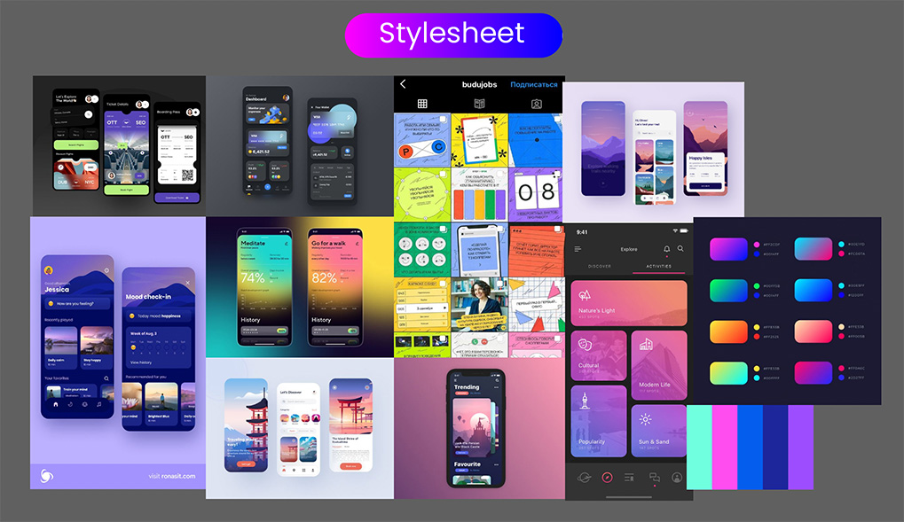

Aperture
Back

De opdracht
Type: Individueel project
Bij dit project moesten we een online ontwerp maken ter aanvulling van de papieren versie International Student Guide Amsterdam.
Hier moesten we een prototype van bouwen in eigen ontwerp met HTML en
CSS.
Het project mocht alleen uit eigen werk bestaan.
Het idee
Om als internationale student Amsterdam beter te leren kennen heb ik een foto-app ontwikkeld. Door elke dag een specifiek onderwerp te fotograferen, leer je de mooie plekken, kleine straatjes en verschillende grachten van Amsterdam kennen door een andere lens. Bij elk onderwerp wordt wat informatie gegeven hoe je het perfecte plaatje kan schieten. Daarnaast kan je foto's delen met vrienden, hun foto's bekijken en mensen volgen.
Voor dit prototype heb ik het onderwerp 'Reflectie' gekozen.
Het proces
Het project bestond uit drie korte sprints van een week. In de eerste week heb ik een moodboard, schetsen en een eerste mockup gemaakt.
Week 2 heb ik een brainstormsessie gehouden over een logo en een naam. Ook ben ik Amsterdam in gegaan om foto's te maken voor de content.
Week 3 bestond uit het finetunen en het maken van een design rationale.
